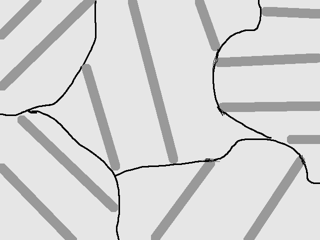
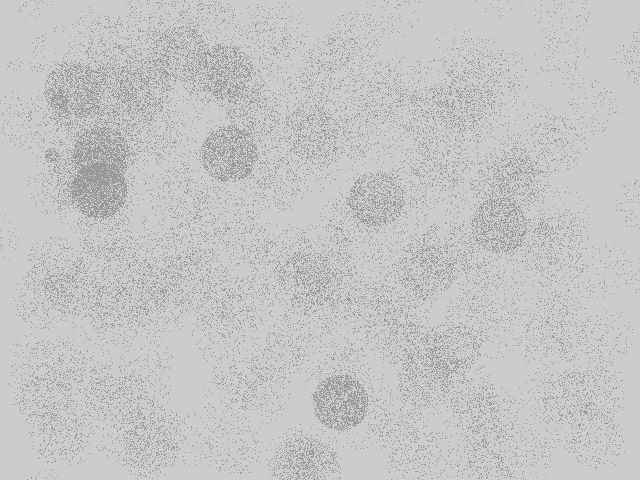
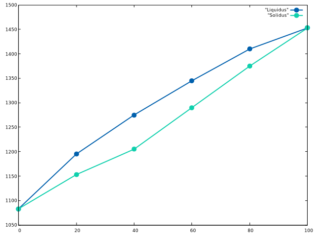

1.
這些東西都可以在上課筆記中找到～～不過我還是寫惹。
level rule：兩態共存時，兩態物質的重量比例，與該點往左右延伸到相之間邊界的距離成反比。
phase rule：決定多態共存時，在相圖上的圖形維度(比如說一個點、一條線、一個面，或根本不可能存在)。
$$F = n - r + 2$$
其中F為在相圖上的維度(自由度); n 為金屬成份的種類; r為相的數目。
溫壓任何一個物理量要求固定時，則總自由度必須少1（如定壓更正為\(F = n - r + 1\)）。
invariant reaction：當物質冷卻或加溫時，通過相圖上自由度為1的點時所發生的反應。
2.
這些東西都可以在上課筆記中找到～～不過我還是寫惹。
segregation：在金屬混合物由液體凝固時，如果冷卻速度太快，或冷卻不均勻，不同時間凝固出的金屬間無法彼此擴散，將形成一層一層成分各不相同的金屬。
dendrite：液態金屬凝固初期，形成的樹枝狀狀結構。
(圖待補)(電腦不方便R)
因為casting的金屬通常很多，所以沒辦法很均勻的冷卻， 而且casting時表面金屬通常冷卻速度遠比內部金屬快，因此不同時間凝固的金屬很難擴散均勻。所以容易有segregation發生。
3.
圖可以發現有一個\( L \overset{300^{\circ} C} {\rightarrow} \alpha + \beta\)的共晶點。
根據level rule，\(\alpha\)與\(\beta\)的比例，和該點到兩相固相線的距離成反比，因此：
$$W_{\alpha}:W_{\beta} = \frac {1} {60 - 16} : \frac {1} {86 - 60} = 26 : 44$$
因此\(\alpha\)的比例為：
$$\alpha \% = \frac {26} {26 + 44} \cdot 100 \% = 37.1 \%$$
-
接下來要求比例相反，也就是40%R的狀況。這時候他的過程會是：
經過\(\alpha + L\)區域時，形成初晶，一直到300度邊界的前一刻，假定沒有segregation發生，則依照level rule：
$$W_{liquid} : W_{\alpha} = 1 : 1$$
也就是這時的成分是：
$$\alpha：50 \%$$
$$L：50\%$$
接著跨過300度邊界的那瞬間，50%的L變成晶體。依照level rule，析出晶體中，\(\alpha\)與\(\beta\)比例為：
$$W_{\alpha, L} : W_{\beta, L} = \frac{1}{2}:\frac{1}{1} = 2:1$$
因此截至目前，\(\alpha與\beta\)的比例為：
$$\alpha：50\%(初晶)+50\% \cdot \frac {2} {3}(L析出) = 83.3 \% \\ \beta = 50\% \cdot \frac {1}{3}(只有L析出) = 16.7\%$$
接著通過congruent point，這時候100%變成\(\sigma\)態，因此\(\alpha與\beta\)的比率皆為0
4.
(圖待補)
由左至右分別舉出：
\(5.5^{\circ}C\)：由\(\beta Ti\)固體形成\(\alpha Ti\)與\(Ti_{2}Ni\)固體，因此是共析
\(27.9^{\circ}C\)：由\(L\)液體形成\(\beta Ti\)與\(Ti_{2}Ni\)固體，因此是共晶
\(37.8^{\circ}C\)：由\(L + TiNi\)固液共存形成\(Ti_{2}Ni\)固體，因此是包晶
\(65.7^{\circ}C\)：由\(L\)液態形成\(TiNi\)與\(TiNi_{3}\)固體，因此是共晶
\(86.1^{\circ}C\)：由\(L\)液態形成\(TiNi_{3}\)與\(Ni\)固體，因此是共晶
所以總共有：共析、共晶、包晶3種Invariant Reactions
5.
- (圖待補)
- (圖待補)
緩慢冷卻下：
黑線為晶界，深色線為\(\beta\)態，淺色線為\(\sigma\)態。因為有時間給他好好長，所以樣子也就是好好長的樣子。
-
淬火下：
深色線為\(\beta\)態，淺色線為\(\sigma\)態。因為淬火是一件很暴力的事，所以什麼東西都沒有時間好好成長。這張圖想表達的是麻田散鐵那種感覺。不過不管用手繪或是電腦會都很困難，所以就當個示意圖吧。
- 那個點叫congruent point
6.
使用GNU plot套件畫：

在固相線(solidus)與液相線(liquidus)之間的區域可以使用Level Rule。因為任何比例的Ni-Cu，在溫度夠高時都可以互溶(液相線以上的區域跨越整個w%軸)，所以這是「全率固溶型」